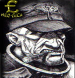

Forums galactiques > Assemblée Galactique : diplomatie officielle > La monarchie, futur d'Espérance?
Oui je soutient ce régime | 19 | |
Non je préfère le système précédant | 18 | |
Non j'opterai pour un autre système | 35 | |
Ne se prononce pas | 3 | |
Total : 75 vote(s) | ||
Pages : 1 2
| Seb-RW Respect diplomatique : 74 20/07 ETU 23:13 | Score : 2 Détails Mes amis, l'heure est à la confusion.
Je suis très étonné mais également déçu, que si peu de gens réagissent à la création de ce nouveau régime politique. Il est du devoir de chacun de s'exprimer pour représenter au mieux l'avis général de la galaxie. Mais j'ai bien peur que trop peu de commandant ai le courage de s'exprimer à l'assemblée. C'est pourquoi j'organise ce vote. C'est un moyen simple pour tous les commandants de s'exprimer anonymement, sans crainte de quelconques représailles ou railleries. Cela permet également aux commandant manquant de temps de s'exprimer sans fioritures. Je précise enfin que ce vote est PUREMENT INFORMATIF ! Il ne s'agit en aucun cas d'un vote aboutissant à quelconque décision. Commandantes, commandants de toutes horizons, je vous invite donc à vous exprimez. C'est votre droit, c'est votre devoir, c'est de l'avenir d'Espérance dont on parle. Merci de votre attention | ||
| Sheiffer Respect diplomatique : 41  20/07 ETU 23:51 | Score : 1 Détails Sheiffer s’avança vers l’estrade, leva les yeux vers le public debout en train de l’applaudir, il se mit à sourire, puis quelques secondes après, il pris une petite boite situé dans sa poche arrière gauche, l’ouvra et pris un cigare qui était dedans !! Il pris un briquet qui était dans la poche droite de son blouson et alluma son cigare !! Il leva les yeux vers le public, réfléchissant quelques secondes, puis il sortit son traditionnel petit papier dans sa poche de son pantalon droite !! Et se mis à parlé fort dans le micro pour que tous le monde entende bien se qu’il dit :
Mes chers Ami(e)s, Laissez-nous, s’il vous plait, le temps à la Résistance, de réfléchir, d’approfondir son idée, et avant son dévoilement total, attendez, avant de lancer quoi que se soit, inutile de s’affoler, Vladimir Harkonnen et Lia nous on proposaient un système qu’il aimerait instauré, pas de problèmes, mais puisque nous en sommes là, laissez la Résistance réfléchir à son tour sur son idée, son projet, son envie de voir un système nouveau ! _ Nous sommes d’accord sur un point avec Le Baron Harkonnen et Lia, c’est que au jour d’aujourd’hui, le système doit avoir quelques modifications ! Nous sommes donc, tous prêt à faire des sacrifices, et de toute façon nous savons, que si changement de système il y a, ce changement prendra sûrement du temps !! Laissez-nous donc le temps de réfléchir à notre tour pour proposé une réforme, qui à nos yeux, serrait, celles qui conviendrai le plus pour nous ! _ L’idée à déjà avancer, elle est en cour de production, mais suite au départ en vacance de certains membres de notre Résistance, elle devra prendre un peu de retard !! Mais n’ayez pas de craintes, d’ici 2 semaines maximum, vous aurai un projet sur la table, et vous jugerai de vous même !! _ Une fois ce projet sur la table, nous vous proposerons un vote, se qui sont pour le système de Vladimir Harkonnen et son amie Lia, celui de la Résistance, ou ne prendre part à aucun d’eux et vivre en )Liberté( !! Après vous serrez libre de suivre celui que vous voulez, mais je vous demande avant d’instaurer votre gouvernement, d’attendre notre proposition, et chacun prendra la voie qu’il veut !! _ Mes ami(e)s, hommes, femmes, vous ne me connaissez pas, je le sais, car je ne suis pas un grands commandant, voir un excellent commandant comme le sont Parisii, Hélios mon ami du GICA, non vous ne me connaissait pas, mais justement je suis là pour apprendre à me faire connaître et vous montrer que j’ai des différents avec les idées sur le projet de Lia et Harkonnen, c’est aussi pour montrer mon point de vue, que j’ai quitté ( temporairement je vous rassure ) ma coalition pour la Résistance, non pas pour me battre mais pour à notre tour exposé notre projet pour vous tous mes ami(e)s !! _ Mes amies, je ne suis pas là pour vous retardé, vous brouillé les esprits ou quoi que se soit, mais bien pour vous dire que nous ne sommes pas les seuls à pensé pour cette galaxie, pour vous dire qu’il est inutile de ce pressé bêtement, patienté mes amies, la Résistance arrivera avec son projet !! Patientez mes amies, patientez … Sheiffer prit un air serein, recula sa bouche du micro, écrasa son cigare dans le cendrier à côté de lui , fit un pas en arrière, saluas le public qui l’applaudissait de nouveau, jeta un dernier regard avec une léger sourire qui voulait en dire long !! Puis il s’en alla !! | ||
| Seb-RW Respect diplomatique : 74 21/07 ETU 00:01 | Score : 2 Détails Ce topic a été créé uniquement pour le vote Sheiffer, pas pour les débat politiques qui se font sur les topic parallèles.
De plus, pouvez vous m'indiquer l'interet de poster le même message dans 2 topic différents? C'est presque de la propagande que vous faites mon cher. Pas sur mes topics s'il vous plait. | ||
| Naruse Respect diplomatique : 1178  21/07 ETU 00:15 | Score : 3 Détails Je ne dirais qu'une chose : le Commandant Albert Simon a déjà pris cette initiative. Alors il serait gentil (et encore je suis poli) d'arrêter de créer chacun sa salle pour CE vote.
Merci de votre inattention. | ||
| sezoboss Respect diplomatique : 84 21/07 ETU 00:56 | Score : -3 Détails c vrai que ca fait trop de vote a la fois pour un seul sujet
et cela risque d'affecter sur le nombre de personnes votant car tout le monde ne va pas voter sur chaqu'un de ces topics et il y a des gens qui pourrais le faire plusieurs fois donc la comptabilisation des vote serait incrédible Cela veut donc dire que ces initiations quoi que partient d'une bonne intention seraient toutes inutilies par leurs incrédibilité Je suis donc d'accord avec le commandant Naruse | ||
| Seb-RW Respect diplomatique : 74 21/07 ETU 09:23 | Score : 0 Détails Ce vote est sensiblement différent de celui de Albert Simon. Et cette différence change tout je vous l'assure. vous aurez mes explications quand suffisament de commandants auront voté.
| ||
| Seb-RW Respect diplomatique : 74 21/07 ETU 11:50 | Score : 0 Détails Un petit up
Votez mes amis votez, je veux atteindre les 50 votes au moins | ||
| Seb-RW Respect diplomatique : 74 21/07 ETU 12:31 | Score : 1 Détails Bon, mes amis il est temps de vous révéler la vérité :
CE VOTE ETAIT UN LEURRE ! Et oui la diférence avec le vote organisé par le commandant Albert Simons est que le vote que j'organisais, n'avais pas pour but de savoir qui était pour et qui était contre la Monarchie de Vladimir Harkonnen et Lia. Et oui, la subtilité de ce vote était de vous faire admettre, mais de façon déguisée que la majorité d'entre vous ne vouliez plus du régime des diplomates d'où la réponse : "non je préfèrerai un autre système". Cette option ayant obtenu la majorité, cela montre bien le désir de la plupart d'entre vous de passer à autre chose. Ce qui m'atriste, c'est que personne ne propose rien. Personne??? Si : Vlad et Lia Et oui étant donné qu'ils sont les seuls à avoir proposé une alternative élaborée, leur monarchie est donc légitime et DOIT donc être aprouvée. J'ai peut-être déguisé la vérité sur ce vote mais le résultat y est : Vive le Roi Vlad, Vive la Reine Lia et LONGUE VIE AU ROYAUME D'ESPERANCE !!! | ||
| Abbadon Respect diplomatique : 225  21/07 ETU 12:36 | Score : 0 Détails Bon ben alors longue vie au roi et a la reine! (slurp)
| ||
| lord eddard Respect diplomatique : 169 21/07 ETU 12:37  | Score : 0 Détails Si vous regardiez les débats, vous seriez que vous êtes en trainde dire des bétises...
Alors lisez et informé vous avant de crier ce genre de chose sur tout les toits. édit: grillé, mon message est pour Seb-RW | ||
| Abbadon Respect diplomatique : 225 21/07 ETU 12:38 | Score : 0 Détails je sais...olhala...longue vie au patriarche et a la matriarche qui-ne-nous-dirige-pa-mais-qui-nous-guident.
| ||
| -[Aerÿnn]- Respect diplomatique : 2661  21/07 ETU 12:38 | Score : 1 Détails *soupirs*
"Bon peut-être que la création de votes concernant le Royaume d'Espérance va peut-être enfin finir... Au fait... Cette option ayant obtenu la majorité, cela montre bien le désir de la plupart d'entre vous de passer à autre chose. Ce qui m'atriste, c'est que personne ne propose rien. La majorité ? En est-tu bien sûr ? Enfin bref... Et pour ce qui est de personne ne proposant rien... Regarde bien... Ah mais tu as bien vu, bravo... Hé oui... Lia et le Baron ont bien proposé quelquechose... Fin du jeu (sans jeu de mots... -_-')" | ||
| Rastapopulyps Respect diplomatique : 452 21/07 ETU 19:34 | Score : 2 Détails Je suis entierement d'accord avec Aerynn.
Il es trop facil de profiter de la creation des uns pour s'insurger... Et puis l'insurrection est inutile si elle ne propose rien. Bien que fondamentalement, je sois contre la monarchie, il me faut ouvrir les yeux... Je suis le patriarche de mon peuple depuis plus de 10 000 ans! Et ca marche tres bien, et cest la meme chose pour chacun d'entre vous! Je ne suis pas monarchiste, mais je suis curieux et scientifique: je soutient donc l'experimentation. | ||
| Galtier Respect diplomatique : 61  21/07 ETU 22:10 | Score : 1 Détails Cher commandant, l'insurection n'a-t-elle rien proposer ? Il me semble qu'elle a proposé une chose.
Refuser la prise de pouvoir et la mise en place d'une dictature. Elle a proposé le refus d'un système se disant près à aider ceux qui sont près de l'extinction en accélérant leur extinction. Elle a proposé le refus d'un système où seul 2 "patriarches" décident de la vie des habitants de cette galaxie. Elle a proposé le refus d'un système privant de liberté tout commandant n'embrassant par leurs idéaux. Elle a proposé le refus d'un système où la vie n'a pas d'importance. Elle regroupe un ensemble de commandants s'opposant à l'imposition de "lois" sans discution, l'imposition d'un régime par une minorité et surtout, l'interdiction de toutes discutions et de toutes propositions alternatives. Jusqu'à lors, tout ce qui a été demandé, signalé aux protagonistes n'a pas été écouté. | ||
| Rastapopulyps Respect diplomatique : 452 21/07 ETU 22:43 | Score : 1 Détails Commandant Galtier,
Je vous remercie de confirmer ce qui a ete dit, a savoir que ni vous ni persone a votre connaissance ne propose quoi que ce soit. Vous proposez le refus. Peut on appeler cela une Refutocratie? Cela me semble aussi vide de contenu qu'une pochette surprise sans rien dedans. Si vous avez un programme, oserai-je dire une constitution, une idee de gouvernement, bref quoi que ce soit d'autre que de dire "nan!" en tapant du pied, je serai le premier a y preter la plus grande attention. En esperant que vous avez remarque que votre message precedant me donne raison. | ||
| Galtier Respect diplomatique : 61 21/07 ETU 22:50 | Score : 1 Détails Très bien, dans ce cas, je reformule.
Elle a proposé un système près à aider ceux qui sont dans le besoin sans leur dire de se débrouiller seul Elle a proposé un système dirigé par les peuples et pour le peuple sont l’effigie d’un parlement représentant les intérêts de tous. Elle a proposé un système garantissant la liberté tous les commandants vivant dans cette galaxie. Elle regroupe un ensemble de commandants désirant établir où chacun pourra s’exprimer sans craindre pour sa propre vie. Mais jusqu'à lors, tout ce qui a été dit n’a pas été écouté. Mon message précédant n'a d'autre but que d'affirmer que nous sommes contre l'imposition de nos acts et de nos paroles. En espérant que vous écoutiez enfin ce que nous vous disons. En espérant que vous vous apercevrez que Lie et Vladimir ne propose rien. Ils imposent. | ||
| Sheiffer Respect diplomatique : 41 21/07 ETU 23:19 | Score : 1 Détails Cher Rastapopulyps, sachez que la Résistance est déjà en train de travaillé sur une nouvelle proposition, Galtier fait partie de cette Résistance, il est donc lui aussi en train de réfléchir sur des idées et sachez qu'il en donne lui aussi pour sa part, mais pour le moment, ses idées se doivent de restées dans l'anonymat le plus complet pour éviter l'embrouillement de chacun ! Nous méditons beaucoup sur ce qui serait le mieux pour tous, vous voulez des propositions, vous en aurez sous peu de temps, mais du fait qu'il y est quelques personnes qui partent en vacances nous prenons un peu de retard, mais les idées viendrons, soyez patient je vous prie !!
| ||
| Wolverine Respect diplomatique : 2271  23/07 ETU 12:04 | Score : 3 Détails Sur quels fondements intellectuels, l'insurrection fonde-t-elle sa réflexion ?
L'Insurrection semble se contenter de prendre les positions inverses de celles des Monarques. Ce qui est normal de la part d'un mouvement formé sur le refus de cette Monarchie. Le Commandant Galtier veut encore parler d'un régime formé pour les Commandants et non pour les Nations ou civilisations composant cette Galaxie. On est vraiment mal barrés : des réflexions aussi limitées de la part d'insurgés ... Vivement la guerre ! | ||
| Galtier Respect diplomatique : 61 23/07 ETU 12:11 | Score : 0 Détails Cher commandant Wolverine, je pars du simple postula qu'un commandant représente son peuple, la nation dont il est issue, au sein de l'assemblée.
Cependant, comme vous l'a dit le commandant Sheiffer, une contre proposition vous sera faites. De plus, celle-ci sera mise à l'approbation de tous. | ||
| Wolverine Respect diplomatique : 2271 23/07 ETU 12:25 | Score : 6 Détails De quel droit pensez-vous pouvoir présenter des projets ?
Si, comme vous le dites, vous êtes des insurgés, vous n'avez donc aucune autroirté morale pour le faire. Et, dernier point, qui, ici, un jour aura l'idée lumineuse de se demander qui veut quoi ? J'ai l'impression, dans vos discussions qu'un projet est bon uniquement parce qu'il fait voter les petites mémères et les petits pépères ... J'attends toujours de vous voir proposer un socle commun d'idées fondatrices. Vous mettez la charrue avant les boeufs. Commencez donc par vous demander quelles doivent être les caractéristiques de vos prochaines idées ! Une proposition des insurgés ne concernera donc que les insurgés puisque vous n'avez aucune légitimité pour prétendre pouvoir faire ce que vous voulez faire. Vous n'avez même pas ananlysé les raisons de l'échec du système des Diplomates ... Je parierais volontiers tous mes CLA sur le fait que la soupe que vous servirez comportera les mêmes germes d'erreurs que le système des Diplomates. Bon, je retourne à la pêche, rien n'avance ni d'un côté ni de l'autre ! Je vois que la motivation est à son comble ici ... |
Pages : 1 2
Forums galactiques > Assemblée Galactique : diplomatie officielle > La monarchie, futur d'Espérance?